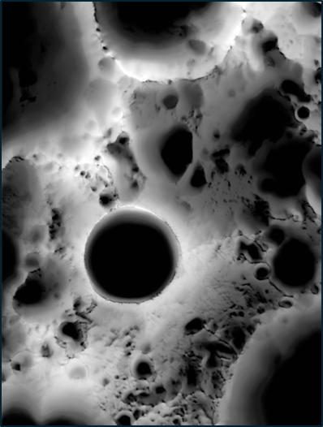
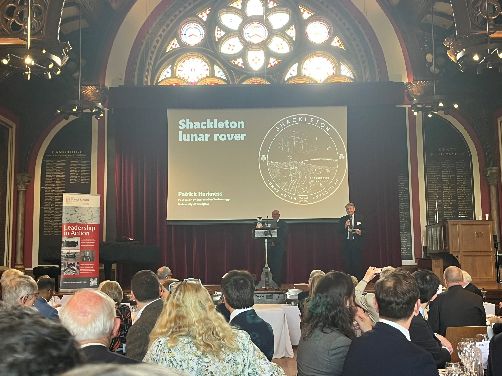

Achievement
The first British mission to the surface of the Moon, undertaking robotic exploration at the lunar south pole. Inspired by the spirit of discovery that once carried explorers beyond the horizon, the initiative aims to inspire a new generation of engineers, scientists, and pioneers.
Science
Searching for ground truth of water ice within the permanently shadowed regions of the lunar south pole, Shackleton Rover will help determine how hydrogen and oxygen might one day be created on the moon. These new propellants will support the future exploration of the solar system.
Stewardship
Building on the principles of the Antarctic Treaty System, our presence on the ground will promote the Moon as a new Antarctica: a peaceful global commons with scientific cooperation, responsible exploration, and careful protection of the environment for future generations.


Scientific presentation
Presentation of the project to the British Planetary Science Conference, at the University of St. Andrews.

Public presentation
Address to the James Caird Society, and agreement to fly a part of the RRS Discovery to the moon.

White Paper submitted
Mission brief submitted to the UK Space Frontiers 2035 exercise, with synthesis to be published summer 2026.
Space Frontiers synthesis document
To be published online
Summer 2026
Please watch this space....
To be announced
2026